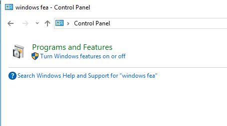
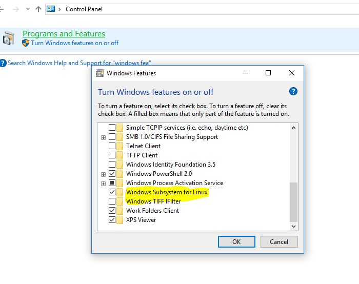
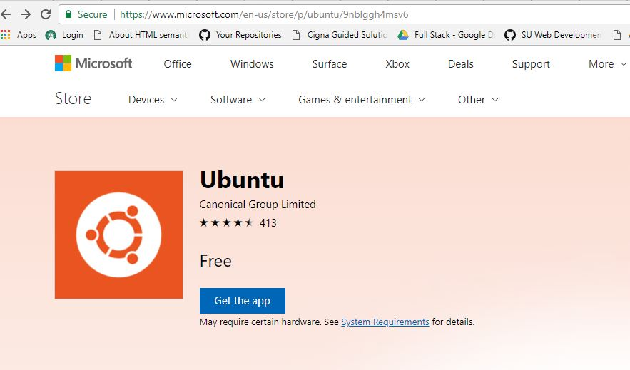

This article answers the question "How to Setup a Linux Shell on Windows 10?"
Modify the Windows Features to add Linux Subsystem. Click on Windows button, key in System, and choose System (Control Panel). Search for Windows Features. Click on "Turn Windows feature on or off".

Scroll down and put a check mark next to "Windows Subsystem for Linux" and click OK. This will ask you to restart your computer and you should respond yes.

When the computer is through rebooting, go to the Windows Store and search for Ubuntu. Click the "Get the app" button and let it download and install.

When it's through installing you can "Launch" the app. You will be prompted to create a user name and password. You can use the same username and password that you used to log into your windows computer but it will be in a different subsystem and will use a different home directory. To access it you'll have to launch the Ubuntu app. You'll be able to access files in the windows subsystem by referencing the /mnt/c/ folder to get to the root of the Windows subsystem. When you're in the Ubuntu shell you can use these commands to help identify who you are whoamiand where you are pwd. If my user name is bob in both windows and in the Ubuntu shell, my Ubuntu home will be /home/bob and my Windows home will be \Users\bob. When you're the Ubuntu shell you can get to your linux home using cd ~ and you get to your Windows home using cd /mnt/c/Users/bob.
How To Geek Provides a lot of documentation on setting up and working with a linux shell on Windows 10. See these links for more information:
How to tell if you have a 32 bit or 64 bit machine: https://www.howtogeek.com/howto/21726/how-do-i-know-if-im-running-32-bit-or-64-bit-windows-answers/
How to install linux shell on a windows 10 machine: https://www.howtogeek.com/249966/how-to-install-and-use-the-linux-bash-shell-on-windows-10/
How to install ubuntu bash on a windows 10 machine: https://www.howtogeek.com/261449/how-to-install-linux-software-in-windows-10s-ubuntu-bash-shell/
Using the linux terminal CLI (command line interface): https://www.howtogeek.com/140679/beginner-geek-how-to-start-using-the-linux-terminal/